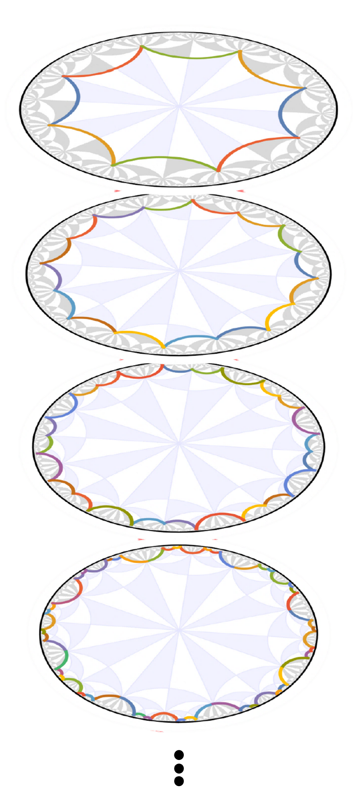

HyperCells is a GAP package which enables the construction of graphs underlying tight-binding models on infinite and compactified hyperbolic lattices on primitive cells and supercells based on triangle groups and quotients with normal subgroups.
HyperBloch is a Mathematica package for the construction of the corresponding Bloch Hamiltonian, its eigenstates, and spectrum based on Abelian hyperbolic band theory. It enables advanced visualizations of hyperbolic lattices and graphs of underlying tight-binding models on the Poincaré disk model.
Efficient Modeling of Tight-Binding Models on Hyperbolic Lattices#
Hyperbolic lattices were recently theoretically described by a non-Abelian generalization of the Bloch theorem, but practical approaches for efficient computations have remained missing. The supercell method overcomes the challenges posed by noncommuting translations, and enables significant progress towards an analytical description of hyperbolic lattice models in momentum space. To encourage further investigations in this emerging field, we have implemented the supercell method in a pair of complementary open-source software packages; the GAP package HyperCells and the Mathematica package HyperBloch.
Supercell Method#
More specifically, we use computational group theory to create a sequence of progressively larger unit cells, each formed as a symmetric aggregate of smaller unit cells. Subsequently, we apply the previously established Abelian hyperbolic band theory — which ignores the noncommutativity of translations — to those growing supercells and obtain a converging description of the infinite lattice. The method was introduced in Phys. Rev. B 104, 115136 (2021). Practically, we need to perform the following steps: